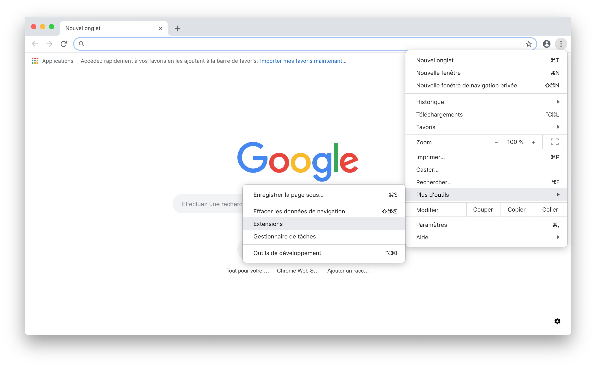
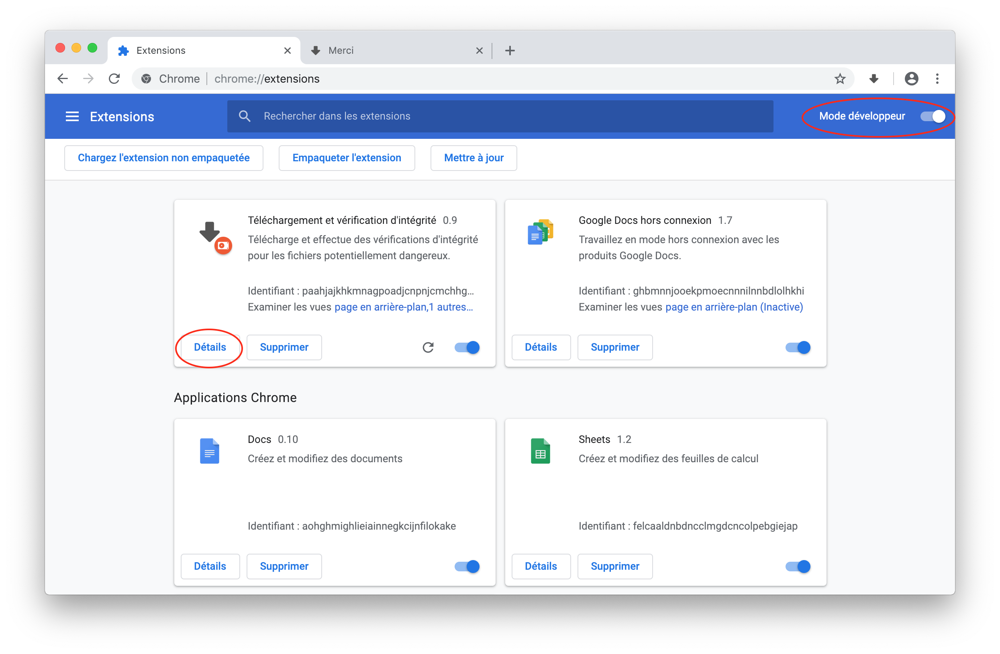
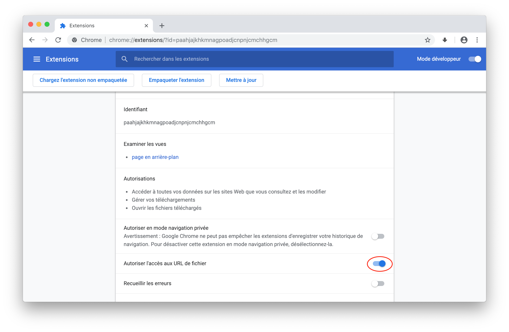

Merci
Afin de permettre aux vérifications de sécurité d'avoir lieu, il vous faut autoriser le plugin à accéder aux fichiers télécharger par votre navigateur. Pour ce faire, veuillez suivre ces instructions:
3. Installation
En haut à droite de chrome, cliquez sur « Plus » (les trois points verticaux) .
Allez sur « Plus d’Outils » puis « Extensions ».

Sélectionnez détails dans l’extension nommée « Téléchargement et vérification d'intégrité ».

Activer l'accès aux URL de fichier.
